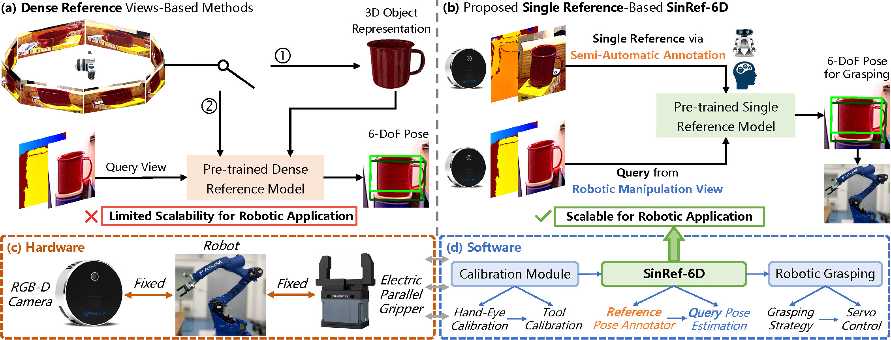
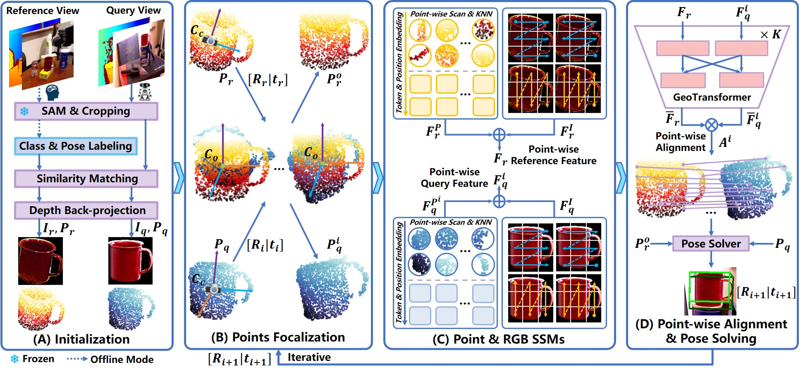

Abstract
Pose estimation-guided unseen object 6-DoF robotic manipulation is a key task in robotics. However, the scalability of current pose estimation methods to unseen objects remains a fundamental challenge, as they generally rely on CAD models or dense reference views of unseen objects, which are difficult to acquire, ultimately limit their scalability. In this paper, we introduce a novel task setup, referred to as SinRef-6D, which addresses 6-DoF absolute pose estimation for unseen objects using only a single pose-labeled reference RGB-D image captured during robotic manipulation. This setup is more scalable yet technically nontrivial due to large pose discrepancies and the limited geometric and spatial information contained in a single view. To address these issues, our key idea is to iteratively establish point-wise alignment in a common coordinate system with state space models (SSMs) as backbones. Specifically, to handle large pose discrepancies, we introduce an iterative object-space point-wise alignment strategy. Then, Point and RGB SSMs are proposed to capture long-range dependencies and spatial information from a single view, offering superior spatial modeling capability with linear complexity. Once pre-trained on synthetic data, SinRef-6D can estimate the 6-DoF absolute pose of an unseen object using only a single reference view. With the estimated pose, we further develop a hardware-software robotic system and integrate the proposed SinRef-6D into it in real-world settings. Extensive experiments on six benchmarks and in diverse real-world scenarios demonstrate that our SinRef-6D offers superior scalability. Additional robotic grasping experiments further validate the effectiveness of the developed robotic system.
Task Setup and Robotic Integration
Overview of the proposed task setup and robotic integration for unseen object 6-DoF absolute pose estimation tailored for practical robotic applications. (a) and (b) compare two types of manual reference view-based methods. (a) Dense reference views-based methods typically rely on 1): 3D object reconstruction or 2): template matching, which is time- and memory-consuming (not suitable for robotic applications). (b) The proposed method estimates unseen object pose from only a single reference view, providing enhanced efficiency and scalability (suitable for robotic applications). (c) and (d) are the detailed hardware and software architectures of our integrated robotic system. We also develop an efficient human-robot collaborative semi-automatic annotator based on the proposed task setup, enabling single reference annotation for unseen object within one minute.
Framework Overview
Simple-yet-effective SinRef-6D task setup and framework for real-world robotic application: Given a normal RGB-D reference view of an unseen object, we aim to predict its 6-DoF absolute pose from any query view. SinRef-6D comprises four modules: (A) The reference view is labeled via a human-robot collaborative semi-automatic annotator, then the RGB-D images of the reference and query views are segmented, and the segmented depth maps are back-projected into point clouds. (B) The corresponding point clouds of the reference and query views are focalized from the camera coordinate system to the object coordinate system. (C) Leveraging the proposed Points and RGB SSMs, features are extracted from the focalized point clouds and RGB images, forming point-wise reference and query features. (D) These features are then used to establish point-wise alignment to solve the object pose. Finally, the computed pose is fed back into module (B) to iteratively improve the accuracy of the point-wise alignment, yielding a more precise object pose.
Real-world Qualitative Experiments
Real-world Robotic Applications
Additional Qualitative Experiments
Comparisons with Gen6D on the LineMod Dataset

Comparisons with MegaPose and ZeroPose on the LM-O and TUD-L Datasets

Comparisons with MegaPose and ZeroPose on the IC-BIN and YCB-V Datasets

Comparisons with MegaPose and ZeroPose on the HB Dataset